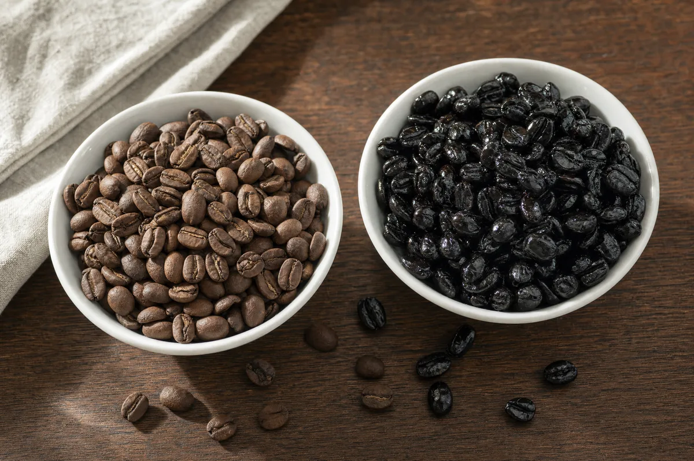
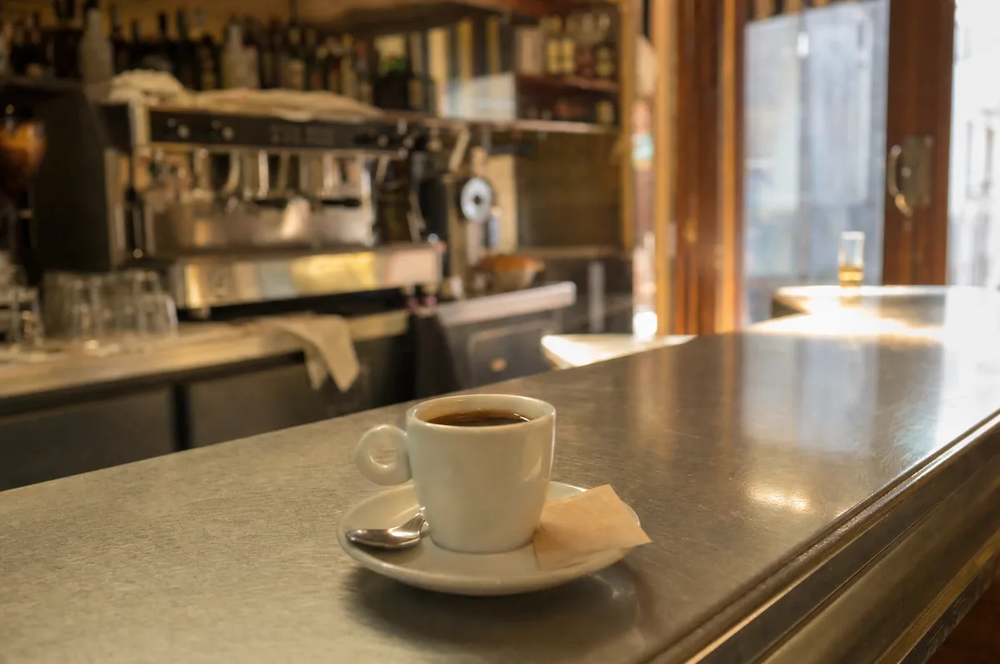
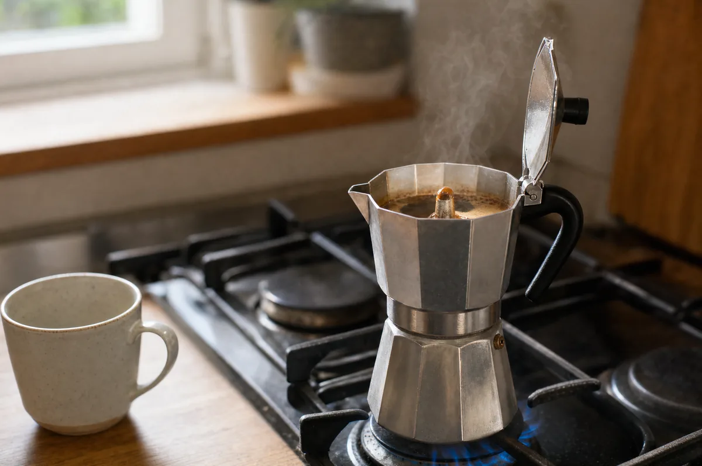

Inicio / Journal / Café torrefacto o de tueste natural: qué es cada uno, por qué amarga y cómo elegir
Origen y proceso
Café torrefacto o de tueste natural: qué es cada uno, por qué amarga y cómo elegir
El café torrefacto es café tostado con azúcar añadido durante el tueste. La norma española permite hasta 15 kg de azúcar por cada 100 kg de café verde. El café de tueste natural se tuesta solo con calor. El azúcar se carameliza y se quema: deja el grano negro y brillante, el café sabe más amargo y se apagan los matices del origen. La mezcla combina los dos y tiene que indicar los porcentajes.

En España el torrefacto es tan habitual en bares y supermercados que mucha gente cree que así sabe el café. No es así. Esta guía te explica qué es, qué dice la ley, por qué amarga y cómo reconocerlo en una etiqueta. Al final tienes las fuentes para que lo compruebes.
Qué es el café de tueste natural
El café de tueste natural es el más sencillo que existe: grano verde y calor, nada más. La norma de calidad del café (Real Decreto 1676/2012) lo define como el café que se obtiene al someter el grano verde a la acción del calor, de forma que adquiera su color, su aroma y sus demás cualidades características.
Lo que hueles y saboreas en la taza viene, por tanto, del propio grano (origen, variedad, proceso) y de cómo se ha tostado. Por eso los cafés de especialidad se tuestan al natural: si quieres notar que un café es afrutado, achocolatado o floral, no puedes cubrirlo con caramelo quemado.
Qué es el café torrefacto
Torrefacto no es una variedad ni un origen: es una forma de tostar. Antes de que termine el tueste se añade sacarosa o jarabe de glucosa. La norma española fija un máximo de 15 kg de azúcar (en sustancia seca) por cada 100 kg de café verde.
Con el calor, ese azúcar se funde, se carameliza y acaba quemándose. Forma una capa negra y brillante alrededor del grano, como un barniz. Por eso, en la lista de ingredientes de un café torrefacto o de una mezcla aparece «café y azúcar».
Y la mezcla: qué significa en España
En España, «mezcla» no significa mezcla de orígenes. Significa café de tueste natural + café torrefacto. La norma obliga a poner los porcentajes en la denominación, por ejemplo «café de tueste natural (70 %) y café torrefacto (30 %)». Las proporciones más habituales son 50/50, 70/30 y 80/20.
Natural, mezcla y torrefacto de un vistazo
| Característica | Tueste natural | Mezcla | Torrefacto |
|---|---|---|---|
| Qué lleva | Solo café | Café natural + café torrefacto | Café + azúcar caramelizado |
| En la etiqueta | «Café de tueste natural» | «Café de tueste natural (70 %) y café torrefacto (30 %)» | «Café torrefacto» |
| Ingredientes | Café | Café y azúcar | Café y azúcar |
| Grano entero | Marrón y mate | Granos marrones y negros brillantes mezclados | Negro y brillante |
| Sabor típico | Depende del origen y del tueste: afrutado, achocolatado, floral… | Más intenso y amargo cuanto más torrefacto lleve | Amargo, quemado y muy uniforme |
| Notas de origen | Se aprecian | Se apagan | Casi no se aprecian |
| Dónde es habitual | Tostadores de especialidad y algunas marcas | Supermercado y hostelería | Poco habitual por sí solo; suele ir en mezclas |
Por qué amarga el café torrefacto
Hay tres razones, y las tres vienen del azúcar:
- El azúcar quemado amarga. El azúcar empieza dulce, pero con calor intenso se transforma en amargor. En el torrefacto no queda dulzor: queda caramelo oscuro.
- Tapa el origen. La capa de caramelo oculta los matices del grano (frutas, flores, chocolate…) y también sus defectos. Por eso se ha usado a menudo con cafés de menor calidad.
- Uniformiza. Los cafés torrefactos tienden a saber parecido, venga el grano de donde venga.
Amargo no significa fuerte. Cuando decimos que un café es «fuerte» solemos mezclar tres cosas: el amargor, la intensidad (cuánto café usas) y la cafeína. El torrefacto sube el amargor, pero no la cafeína. De hecho, la norma exige un mínimo de cafeína del 0,7 % para el tueste natural y del 0,6 % para el torrefacto (sobre materia seca). La cafeína depende sobre todo de la especie (el robusta suele llevar más que el arábica) y de cuánto café pongas, no de que lleve azúcar.
Un poco de historia, sin mitos
El torrefacto nace de una idea práctica. La capa de azúcar protege el grano del aire y la humedad, así que el café aguantaba más tiempo, y además el azúcar sumaba peso. Se suele situar su origen en Cuba, donde se tostaba con azúcar para conservar el café, y en España se extendió con fuerza en la posguerra, cuando el café escaseaba: ayudaba a estirar el producto y a disimular defectos.
Hoy ya no hace falta, pero la costumbre se quedó. Por eso muchas mezclas de supermercado y de hostelería siguen llevándolo, y por eso mucha gente asocia el café con ese sabor oscuro y amargo.

¿Es malo el café torrefacto?
Vamos a separar los hechos de los titulares.
- No está prohibido. Es legal y se vende con normalidad en España. Fuera de España y Portugal es poco habitual, pero eso es cuestión de costumbre y de gusto, no de prohibición. Según el Ministerio de Agricultura, solo se vende de forma relevante en España, Portugal y México.
- El azúcar por taza es pequeño. Con el máximo legal, una dosis de 7 g de café 100 % torrefacto contendría como mucho algo más de 1 g de azúcar, y una mezcla 70/30, unos 0,3 g. Es un cálculo orientativo, y no todo pasa a la taza. El problema real suele ser otro: mucha gente añade azúcar para compensar el amargor, y ese azúcar sí suma.
- Acrilamida: hay un riesgo teórico y los datos comparativos son escasos. La acrilamida se forma en muchos alimentos al tostarlos, freírlos u hornearlos a alta temperatura, también en el café tostado, natural o torrefacto. La IARC la clasifica como «probablemente cancerígena para humanos» (grupo 2A) por estudios en animales, y la EFSA no ha podido fijar una ingesta diaria segura: recomienda mantenerla lo más baja posible. Por eso la UE no fija un límite máximo, sino niveles de referencia para que los productores apliquen medidas de reducción; para el café tostado, 400 µg/kg (Reglamento (UE) 2017/2158). Algunos medios citan estimaciones de unos 800 µg/kg en el torrefacto frente a unos 180 en el natural, pero sin indicar la fuente, y no hemos encontrado mediciones comparativas publicadas. Tampoco hay estudios sólidos en personas que demuestren un riesgo por tomar café en cantidades normales.
- Tampoco tiene ventajas de salud. No hay evidencia de que el torrefacto mejore la salud frente al natural. En sabor es cuestión de gusto, pero recuerda que tapa los matices del café.
Nuestra conclusión: elige por sabor, no por miedo. Si te gusta el torrefacto, puedes tomarlo. Si quieres saborear el café de verdad, el tueste natural te da mucho más.
Cómo saber si un café es torrefacto
Es más fácil de lo que parece si sabes dónde mirar:
- La denominación. Busca «café de tueste natural». Si pone «torrefacto» o «mezcla», lleva azúcar tostado.
- Los ingredientes. Solo «café» significa natural. «Café y azúcar» significa torrefacto o mezcla.
- Los porcentajes. En una mezcla verás algo como «natural 70 % / torrefacto 30 %».
- Ojo con «100 % arábica». Habla de la especie del café, no de cómo se ha tostado: un café 100 % arábica puede ser torrefacto.
- El grano. En grano, el torrefacto es negro y brillante; el natural, marrón y mate. Si compras café molido, solo te queda la etiqueta.
- La fecha de tueste. Un tostador que cuida su café suele indicarla. Si no aparece, desconfía.
Todos los cafés de nuestra tienda son de tueste natural.
Cómo pasar del torrefacto al natural sin sufrir
Si estás acostumbrado al café de bar, el primer café natural puede parecerte «flojo» o ácido. Es normal: tu paladar está habituado al amargor. Para que el cambio sea fácil:
- Baja el torrefacto poco a poco. Empieza con una mezcla 80/20 o 70/30 y ve reduciendo hasta llegar al 100 % natural.
- Elige un tueste medio-oscuro. Te da cuerpo e intensidad sin el amargor del caramelo quemado.
- Prepáralo bien. En cafetera italiana, usa una molienda media-fina, fuego medio-bajo y retírala en cuanto empiece a burbujear. Así evitas el amargor. Lo tienes paso a paso en nuestra guía de la cafetera italiana.
- Quita el azúcar de a poco. Pasa del sobre entero a medio, y de medio a nada. Un café natural bien preparado tiene dulzor propio.
- Prueba con leche. Un cortado o un café con leche hecho con café natural es un buen primer paso.
Si quieres empezar con un café de tueste natural y con mucho cuerpo, prueba nuestro Italian Blend: 80 % arábica de Colombia y 20 % robusta de la India, en bolsa de 250 g, en grano o molido.

Preguntas
Preguntas frecuentes
¿Otra duda? Escríbenos →01¿Qué es el café torrefacto?
Es café tostado con azúcar (sacarosa o jarabe de glucosa) añadido antes de terminar el tueste, hasta un máximo de 15 kg por cada 100 kg de café verde. El azúcar se carameliza y deja el grano negro y brillante, con un sabor más amargo.
02¿Qué diferencia hay entre café natural y torrefacto?
El natural se tuesta solo con calor y deja notar el origen del grano. El torrefacto lleva azúcar caramelizado, es más amargo y tapa los matices del café. En la etiqueta, el natural lleva solo «café» como ingrediente; el torrefacto, «café y azúcar».
03¿Qué significa «café mezcla»?
En España, mezcla es una combinación de café de tueste natural y café torrefacto. La etiqueta debe indicar los porcentajes, por ejemplo 70 % natural y 30 % torrefacto.
04¿El café torrefacto es malo para la salud?
No conocemos evidencia concluyente de que sea perjudicial en cantidades normales, pero tampoco de que aporte ventajas. La acrilamida, que se forma en todo café tostado, está clasificada como probable cancerígeno (IARC 2A) y la EFSA recomienda reducir la exposición; no hay mediciones comparativas fiables entre natural y torrefacto. El problema más claro es el azúcar extra que se añade para quitar el amargor.
05¿El café torrefacto tiene más cafeína?
No necesariamente. La cafeína depende sobre todo de la especie (el robusta suele llevar más) y de la dosis. La norma incluso fija un mínimo algo menor para el torrefacto (0,6 %) que para el natural (0,7 %).
06¿Está prohibido el café torrefacto en Europa?
No. Es un producto legal. Se consume sobre todo en España, Portugal y México, y es poco habitual en el resto de Europa.
07¿Qué es mejor para la cafetera italiana, natural o torrefacto?
Funciona con cualquiera, pero con tueste natural notarás más matices y menos amargor. Si te amarga, prueba una molienda un poco más gruesa, fuego bajo y retira la cafetera del fuego al oír el burbujeo.
08¿Por qué el café del bar amarga más que el de casa?
Es habitual que los bares usen café en mezcla con torrefacto, y además la extracción en una máquina de espresso puede realzar el amargor. En casa, un café de tueste natural bien preparado suele resultar más suave y dulce.
Fuentes
- Real Decreto 1676/2012, por el que se aprueba la norma de calidad para el café (BOE): https://www.boe.es/eli/es/rd/2012/12/14/1676
- Reglamento (UE) 2017/2158, medidas de mitigación y niveles de referencia para la acrilamida: https://eur-lex.europa.eu/eli/reg/2017/2158/oj
- AESAN, aplicación del Reglamento 2017/2158 sobre acrilamida (2018): https://www.aesan.gob.es/AECOSAN/web/noticias_y_actualizaciones/noticias/2018/Acrilamida.htm
- OCU, clasificación de cafés molidos de supermercado, vía The Objective (2023): https://theobjective.com/economia/consumo/2023-06-15/ocu-cafes-molidos-supermercado/
- Perfect Daily Grind, «El mercado español del café de especialidad» (2026): https://perfectdailygrind.com/es/2026/02/14/mercado-espanol-del-cafe-de-especialidad/
- Xataka, sobre el origen y la tradición del torrefacto en España: https://www.xataka.com/magnet/cafe-que-espana-tradicion-europa-esta-vetado-culpa-tiene-tradicion-acrilamidas/amp
- Justicia Alimentaria, «Informe OCA: Abandona el torrefacto» (2026): https://justiciaalimentaria.org/wp-content/uploads/2026/02/INFORME_CAFE_TORREFACTO.pdf
Última actualización: 4 de noviembre de 2026. Si ves algún dato que haya cambiado, escríbenos y lo revisamos.